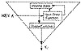
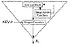
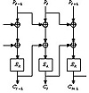

| Previous | Table of Contents | Next |
Block ciphers in counter mode use sequence numbers as the input to the algorithm [824,498,715]. Instead of using the output of the encryption algorithm to fill the register, the input to the register is a counter. After each block encryption, the counter increments by some constant, typically one. The synchronization and error propagation characteristics of this mode are identical to those of OFB. Counter mode solves the OFB mode problem of n-bit output where n is less than the block length.

Figure 9.13 A keystream generator in output-feedback mode.
Nothing is sacred about the counter; it does not have to count through all the possible inputs in order. You can use any of the random-sequence generators in Chapters 16 and 17, whether cryptographically secure or not, as input to the block algorithm.
Stream Ciphers in Counter Mode
Stream ciphers in counter mode have simple next-state functions and complicated output functions dependent on the key. This technique, illustrated in Figure 9.14, was suggested in [498,715]. The next-state function can be something as simple as a counter, adding one to the previous state.
With a counter mode stream cipher, it is possible to generate the ith key bit, ki, without first generating all the previous key bits. Simply set the counter manually to the ith internal state and generate the bit. This is useful to secure random-access data files; you can decrypt a specific block of data without decrypting the entire file.
Block Chaining Mode
To use a block algorithm in block chaining (BC) mode, simply XOR the input to the block cipher with the XOR of all the previous ciphertext blocks. As with CBC, an IV starts the process.
Mathematically, this looks like:
Like CBC, BC’s feedback process extends errors in the plaintext. The primary problem with BC is that because the decryption of a ciphertext block depends on all the previous ciphertext blocks, a single error in the ciphertext will result in the incorrect decryption of all subsequent ciphertext blocks.

Figure 9.14 A keystream generator in counter mode.
Propagating Cipher Block Chaining Mode
Propagating cipher block chaining (PCBC) [1080] mode is similar to CBC mode, except that both the previous plaintext block and the previous ciphertext block are XORed with the current plaintext block before encryption (or after decryption) (see Figure 9.15).
PCBC was used in Kerberos version 4 (see Section 24.5) to perform both encryption and integrity checking in one pass. In PCBC mode, an error in the ciphertext will result in incorrect decryption of all blocks that follow. This means that checking a standard block at the end of a message will ensure the integrity of the entire message.
Unfortunately, there is a problem with this mode [875]. Swapping two ciphertext blocks results in the incorrect decryption of the two corresponding plaintext blocks, but due to the nature of the XOR with the plaintext and the ciphertext, the errors cancel. So if the integrity checker looks only at the last few blocks of the decrypted plaintext, it could be fooled into accepting a partially garbled message. Although no one has figured out how to exploit this weakness, Kerberos version 5 switched to CBC mode after the flaw was discovered.
Cipher Block Chaining with Checksum
Cipher block chaining with checksum (CBCC) is a CBC variant [1618]. Keep a running XOR of all the plaintext blocks, and XOR that with the last plaintext block before encryption. CBCC ensures that any change made to any ciphertext block changes the decrypted output of the last block. If the last block contains any sort of integrity check or a constant, then the integrity of the decrypted plaintext can be checked with very little additional overhead.

Figure 9.15 Propagating cipher block chaining mode.
Output Feedback with a Nonlinear Function
Output feedback with a nonlinear function (OFBNLF) [777] is a variant of both OFB and ECB where the key changes with every block:
A single bit error in the ciphertext propagates to only one plaintext block. However, if a single bit is lost or added, then there is infinite error extension. With a block algorithm that has a complicated key scheduling algorithm, like DES, this mode is slow. I know of no cryptanalysis of this mode.
More Modes
Other modes are possible, although they are not extensively used. Plaintext block chaining (PBC) is like CBC except the previous plaintext block is XORed with the plaintext block instead of with the ciphertext block. Plaintext feedback (PFB) is like CFB, except the plaintext, not the ciphertext, is used for feedback. These two modes allow chosen-plaintext attacks in order to resist known-plaintext attacks. There is also cipher block chaining of plaintext difference (CBCPD). I’m sure it gets even weirder.
If a cryptanalyst has a brute-force keysearch machine, then he can recover the key if he can guess one of the plaintext blocks. Some of these stranger modes amount to light encryption before applying the encryption algorithm: for example, XORing the text with a fixed secret string or permuting the text. Almost anything nonstandard will frustrate this sort of cryptanalysis.
| Previous | Table of Contents | Next |
){kind=link}
){kind=link}
){kind=link}
){kind=link}
){kind=link}
){kind=link}